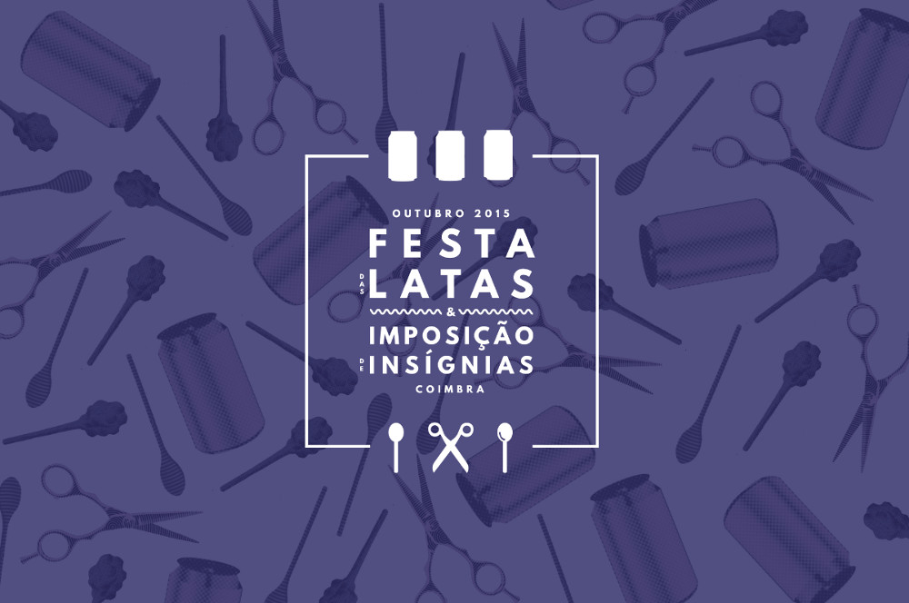
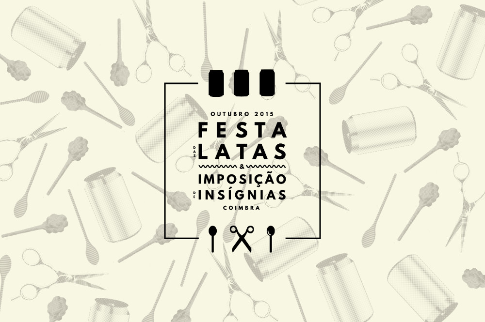
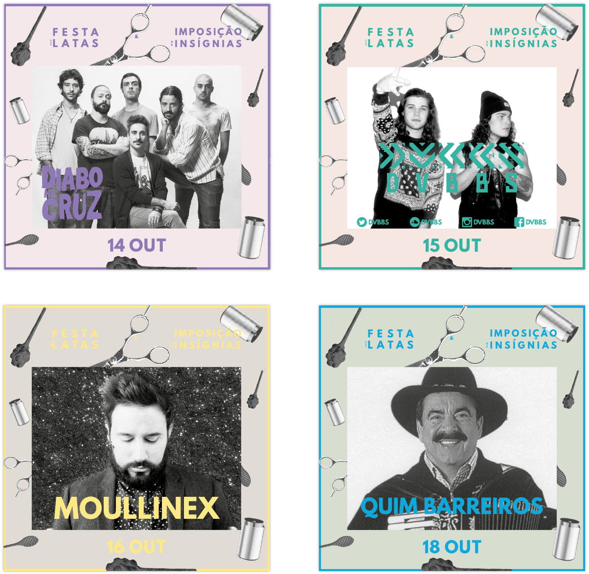
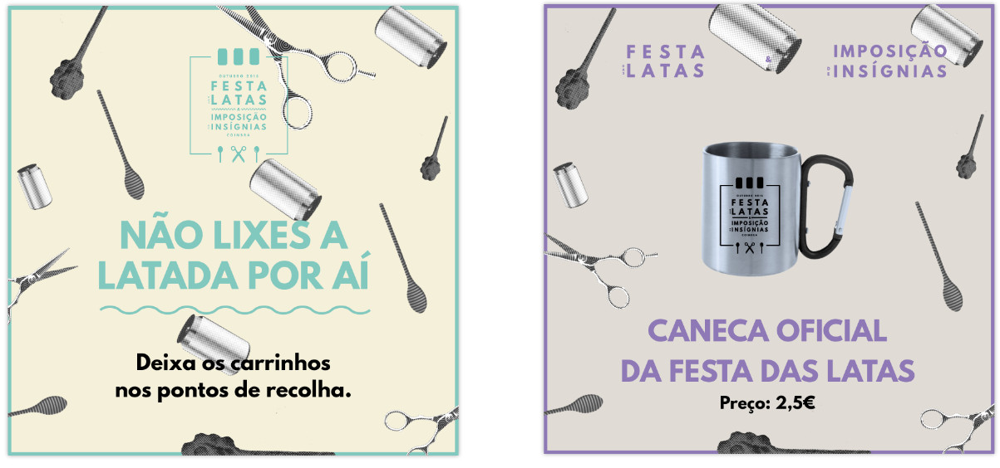
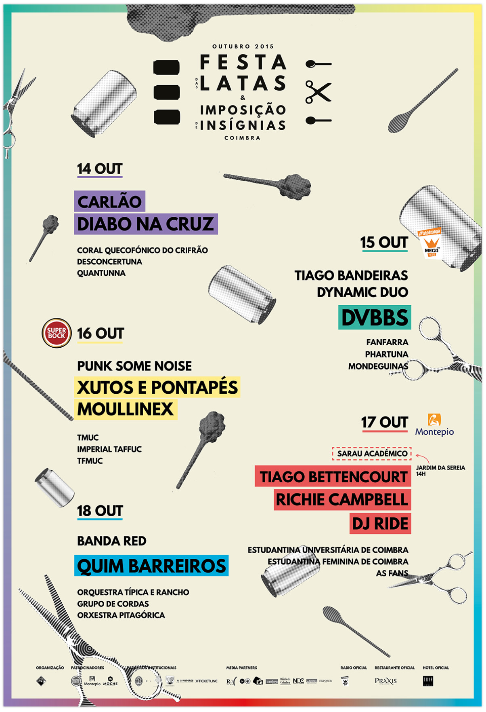
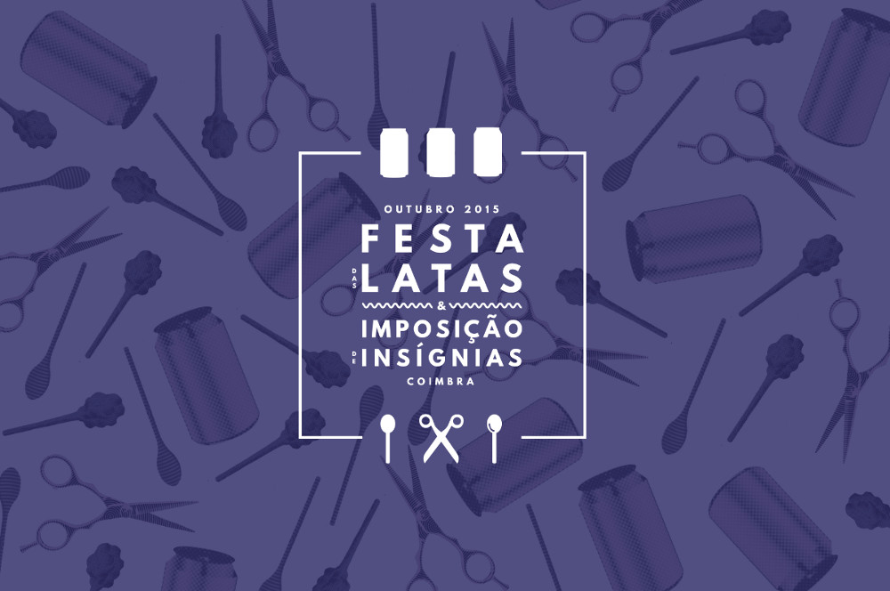
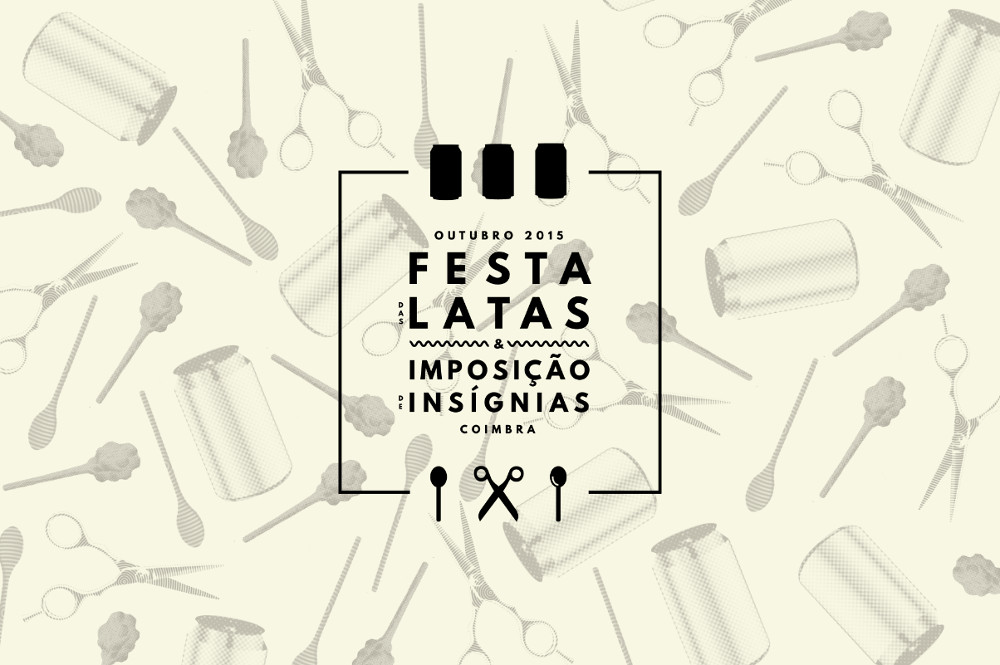
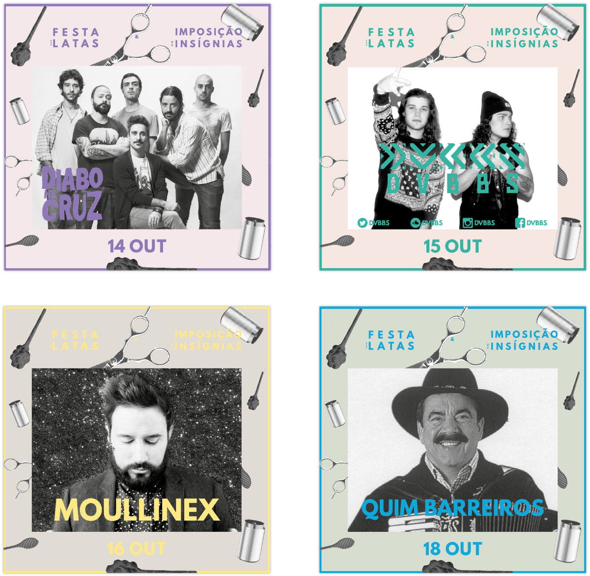
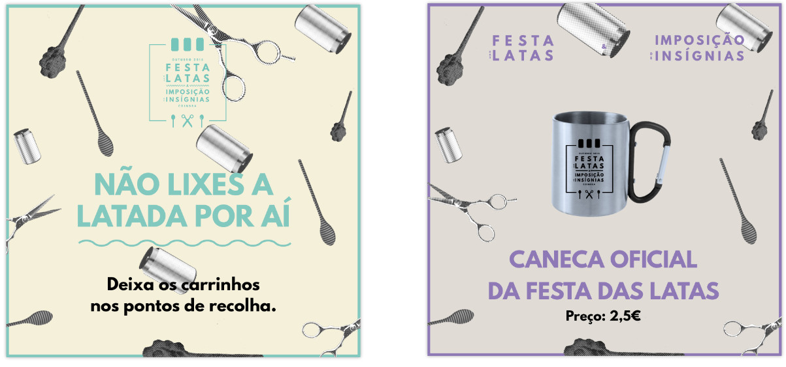
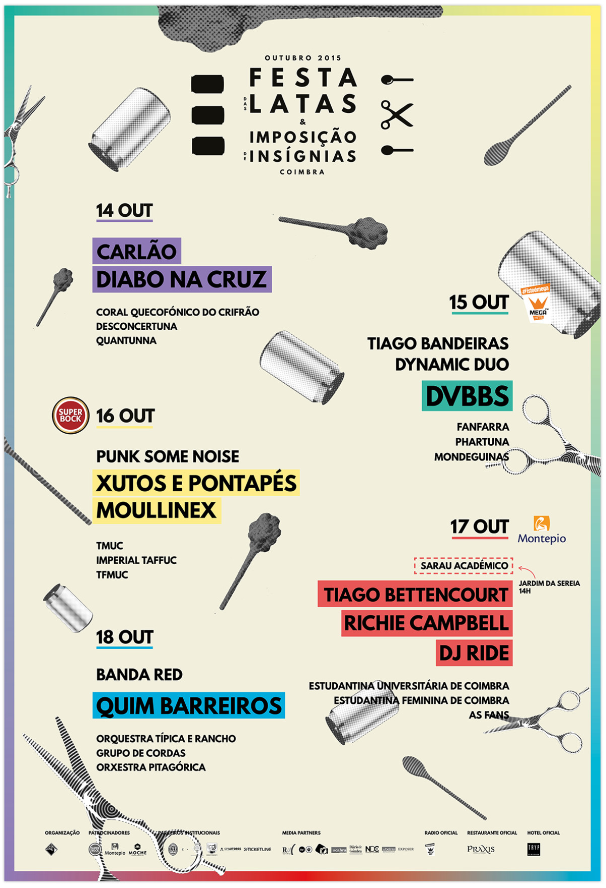

Festa das Latas 2015
Festa das Latas & Imposição de Insígnias is the second most important academic party of Coimbra, and the first ever for the newcomers freshman of university.
The graphic image of the 2015 edition was based on a pattern with the elements that give the name to this festival: cans and the three insignia, scissors, spoons and a wooden object known as "moca".
 









Next Project:
CCDM App Layout